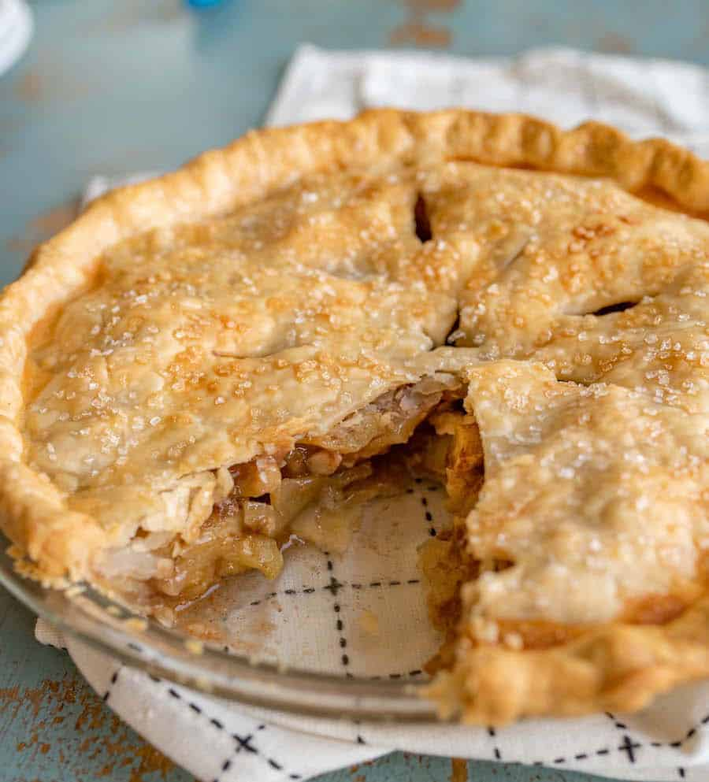

Apple Pie Recipe

Description
A basic apple pie recipe is simple and the end results are just plain tasty. It's a recipe that everyone should have in their collection.
This apple pie doesn’t use a lot of added sugar and you don’t have to cook the apples before adding them to the crust.
Ingredients
- About 5 cups thinly sliced apples (peeled and cored), 8-10 medium apples/li>
- 3 tablespoons sugar
- 3 tablespoons all-purpose flour
- 1-2 teaspoons cinnamon
- 1/4 teaspoon salt
- 2 tablespoons butter, cut into small pieces
- Double pie crust
- 1 egg white + 1 tablespoon water
- granulated or chubby sparkling sugar, optional
Steps
- In a medium bowl add the sliced apples. Sprinkle with the sugar, flour, cinnamon, and salt and toss gently to combine well.
- Roll out and place an uncooked pie crust in the bottom of a deep 9-inch pie plate.
- Place the apple mixture in the uncooked pie shell. Place small pieces of butter on top of apple mixture.
- Top with second pie crust, crimp the edges, and then cut a few slits in the top crust to allow steam to vent.
- Mix the egg white and 1 tablespoon of water together in a small bowl and then brush the top with water and sprinkle with sugar before baking.
- Bake at 450 for the first 15 minutes, then reduce the heat to 350 and continue cooking for an additional 30 to 40 minutes.
- Cool for 10 minutes before serving.